github.com/cchin29/mulan-plm-foldx · slides 2026-09-13 · numbers from
docs/RESULTS.md · comparator figures regenerated 2026-09-12MuLAN + FoldX under leakage-controlled evaluation
A research fork of MuLAN (Lombardi & Carbone) — protein–protein binding ΔΔG from sequence alone, via transfer learning from protein language models (PLMs) into a light-attention head. What survives when homology leakage is removed?
The finding, in one sentence. Base language models degrade sharply on protein families not seen in training, regardless of scale, and a low-cost, encoder-independent FoldX score channel recovers most of the loss — bringing a frozen sequence model — one whose language-model weights are never updated — close to the performance of methods that use the structure directly.
the upstream authors have not reviewed or endorsed this fork · CC BY-NC-SA 4.0
Orientation · how the investigation developed
Origin and scope
ΔΔG is how much a mutation — one amino-acid substitution, or several at once — changes the strength with which two proteins bind. Predicting ΔΔG is a long-standing problem in protein engineering and drug design, and the most accurate methods do so using the three-dimensional structure of the complex.
MuLAN predicts ΔΔG from sequence alone, feeding protein-language-model embeddings into a light-attention head. Under the evaluation protocol standard at the time, its published results were strong.
This work began as an attempt to improve on that — swap the Ankh encoder for a structure-aware one, ProstT5 or AIDO, and re-benchmark on the paper’s own splits. The replacement did not help, and the planned check — confirm the benchmark splits carry no leakage before claiming a fair comparison — proved more important. The work expanded into an investigation of both.
Five lines of inquiry, and where each is covered
| Thread | Question | Findings | Slides |
|---|---|---|---|
| The original aim | Would ProstT5 or AIDO-16B beat Ankh-large as MuLAN’s encoder, measured on S1102 and the standard SKEMPI benchmarks S1131 / S2003 / S4169? Both were proposed as structure-aware alternatives, and AIDO-16B was by far the largest encoder tried. | Neither improved on Ankh-large. | 4 |
| Scale | Is encoder size what matters instead? Ankh-large, Ankh3-large, Ankh3-xl, ESM2-3B, ESM3, ESM-C 600M, ESM-C 6B, SaProt, AIDO-16B. | Performance does not rise with parameter count, either across model families or within one. | 4–7 |
| Structure | If structure does not help through the encoder, how else can it enter? ProstT5 hidden layers → SaProt (explicit wild-type 3Di) → a FoldX binding ΔΔG on MuLAN’s add_scores side channel. | Only the score channel works. Figure 1’s routes 1a → 1d are this thread in order. | 8–9 |
| Evaluation | Are the standard SKEMPI benchmarks a fair test? A check planned from the outset. | They are not. Every candidate was re-run on the full extraction under by-complex, sequence-clustered and CATH-superfamily hold-outs — which is what makes comparison with contemporary frontier methods possible. | 6, 10–15 |
| Attention | Does MuLAN’s attention→interface result survive a change of embedding front-end? | The attention→interface result is specific to Ankh-large. | 16–18 |
Three released components, and where to find them
| Component | Description | Where to find it |
|---|---|---|
| mulan-plm-foldx | The MuLAN fork: the embedding campaign, the FoldX score channel, and every evaluation presented here. | GitHub · the subject of these slides |
| foldenv | The per-residue structural-context extractor — relative solvent accessibility, secondary structure, residue contacts. | GitHub and PyPI · not covered here |
| skempi-foldx | A by-product of the score-channel work: the FoldX compute pipeline, and the binding-ΔΔG energies it produced across the whole of SKEMPI. | GitHub and PyPI · usable with any ΔΔG model, not only MuLAN |
Those energies carry CC BY 4.0 and the runner MIT — deliberately not this repository’s CC BY-NC-SA, since no part of that project derives from upstream MuLAN. That is what makes them usable outside this work.
Slide reading order. Results come first: the comparison and the leaderboard precede the dataset and evaluation machinery that produced them. The investigation ran in the opposite order.
- Already familiar with MuLAN — the threads in the order above. The structure thread (8–9) and the leaderboard (6) are where this work departs from the original.
- Coming from benchmarking or machine learning — the leakage and metric treatment (10–15), the frontier leaderboard (6), the SKEMPI accounting (11–12), the sequence-only versus sequence-plus-structure result (9), and the released per-fold predictions and campaign code (20).
the upstream authors have not reviewed or endorsed this fork
Orientation · vocabulary and metric
Vocabulary and metric
Every headline number is per-structure Spearman at T ≥ 10, written
ppS in these slides. The repository and its README also spell it ps-Sp; the two are one quantity.
- Computation — rank the mutations within each complex carrying at least 10 of them, then average over complexes.
- Rationale — the published frontier reports this same metric, so these results can be placed directly in the frontier’s tables.
- The question answered — which mutation in this interface does the most damage.
- ΔΔG — change in binding free energy on mutation, kcal/mol; positive = destabilizing. Labels are experimental (SKEMPI 2.0), not synthetic.
- arm — a model variant:
base(backbone alone) ·+ FoldX scalar(+1 parameter, the single Interaction Energy term) ·+ FoldX 12-term(+226 parameters, all twelve FoldX terms through a small head). - tier / rung — one evaluation protocol on one dataset; a rung is that tier read as one step of the ladder from the leaky protocol to the CATH hold-out.
- S1102 — upstream MuLAN’s curated 1,102-mutation subset of SKEMPI, used for the per-mutation cross-validation runs and for the attention comparison. The leakage-controlled work uses the full extraction instead.
- SKEMPI 2.0 — the curated database of experimentally measured binding-affinity changes on mutation. Every label in this work comes from there; none is simulated.
- channel coverage — the fraction of a tier's rows carrying a real FoldX value rather than the fold mean. Now 99.2% single-point · 98.7% multi-point · 99.1% combined.
- lineage — one generation of the FoldX channel. Coverage rose 28% → 87.8% → ~99% in two merge fixes; numbers from different lineages are not comparable, and nothing on these slides predates the last fix.
- FoldX — an empirical force field that estimates a mutation's binding ΔΔG from the structure of the complex. Fast, unsupervised, and licensed software; used here as both an input channel and a baseline.
- CATH — a hierarchical classification of protein structural domains. The strictest hold-out here removes whole superfamilies, so no test complex shares a fold family with anything in training.
- the frontier — the leakage-controlled ΔΔG methods reported on USP-ddG's CATH split: CATH-ddG, USP-ddG, BA-DDG, Prompt-DDG, RDE-Network, DiffAffinity, PPIformer, plus the physics baselines FoldX and flex-ddG.
full glossary in the repository README · metric rationale in
docs/SPLITS_AND_METRICS.mdComparison · the protocol this fork inherits
ΔΔG performance vs PLM scale, under per-mutation CV
Even under the leaky protocol, the ordering is non-monotonic in parameter count. Per-mutation CV10 leaks. That was the standard protocol when MuLAN was published; the field has since moved to homology-controlled hold-outs, and this fork follows. The slide is the premise, not a finding.
- The leak — partitioning by mutation puts the same complex in train and test, so a model scores well by recognizing the interface rather than the mutation. Every leakage-controlled method in the comparison ahead — RDE-Network onward — holds out whole complexes instead.
- Provenance — per-mutation CV10 is what the upstream MuLAN paper reported, so these runs are the baseline this fork reproduces before moving to the leakage-controlled rungs.
| Backbone, by encoder size | params | CV10 Pearson r |
|---|---|---|
| ESM-C 600M | 600M | 0.834 |
| SaProt-650M (WT-3Di) | 650M | 0.849 |
| MINT (cross-chain) | 813M | 0.850 |
| Ankh-large | 1.15B | 0.836 |
| MuLAN-Ankh — upstream paper reference | 1.15B | 0.868 |
| ProstT5 | 1.21B | 0.823 |
| ESM3 | 1.4B | 0.794 |
| ESM2-3B | 2.8B | 0.833 |
| ESM-C 6B — best on this protocol | 6.0B | 0.881 |
| AIDO.Protein-16B — largest tested | 16B | 0.837 |
Across families — the measured ordering on the 50-epoch screen (panel ①, the first figure below, where the paired contrasts were computed) is ESM-C 6B 0.859 > {Ankh-large 0.832 ≈ AIDO-16B 0.828} > {ESM2-3B 0.816 ≈ ProstT5 0.805}. The 16B model is tied with a 3.5×-smaller Ankh-large (paired ΔPCC −0.004, AIDO ahead on 2 of 10 folds) and clearly below ESM-C 6B (−0.031, 1 of 10). It does have the smallest spread across folds of any model tested — the most stable, though not the most accurate. Caveat: AIDO is a sparse mixture-of-experts, so 16B total parameters overstates the parameters actually used on each forward pass — the model is smaller in practice than its position on the axis suggests.
Within one family — the same pattern appears where architecture and pretraining data are closest: Ankh3 does not beat Ankh-large. On that same 50-epoch screen, Ankh3-large reaches 0.823 and Ankh3-xl 0.831, against the original Ankh-large at 0.832, and the xl model's 2560-d embedding gains only +0.008 over Ankh3-large's 1536-d.
What tracks performance instead — pretraining objective and data, not raw size. Per-step training cost tracks embedding width rather than parameter count, so the largest models are not even reliably the slowest.
Read the whole panel as the inherited starting point, not as a result: every number after this slide is on a leakage-controlled hold-out.Within one family — the same pattern appears where architecture and pretraining data are closest: Ankh3 does not beat Ankh-large. On that same 50-epoch screen, Ankh3-large reaches 0.823 and Ankh3-xl 0.831, against the original Ankh-large at 0.832, and the xl model's 2560-d embedding gains only +0.008 over Ankh3-large's 1536-d.
What tracks performance instead — pretraining objective and data, not raw size. Per-step training cost tracks embedding width rather than parameter count, so the largest models are not even reliably the slowest.
① Quick screen — 50 epochs, early-stopping patience 10 · includes a sequence-augmentation arm and the peak-RAM / generation-time cost panel
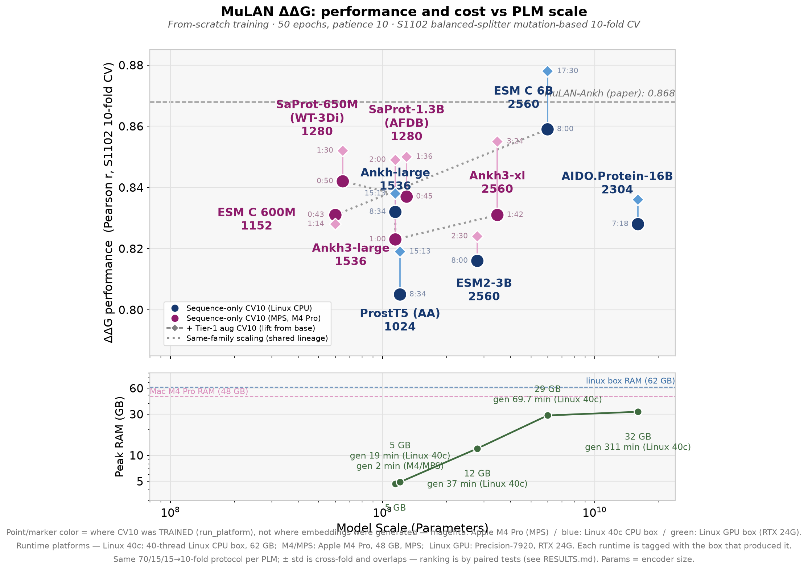
② Converged run — 300 epochs, patience 30, equal-fold (balanced) splitter · this is panel 1 of the next slide and the basis for every result that follows · adds the ESM2-3B paper line (0.854) and MINT
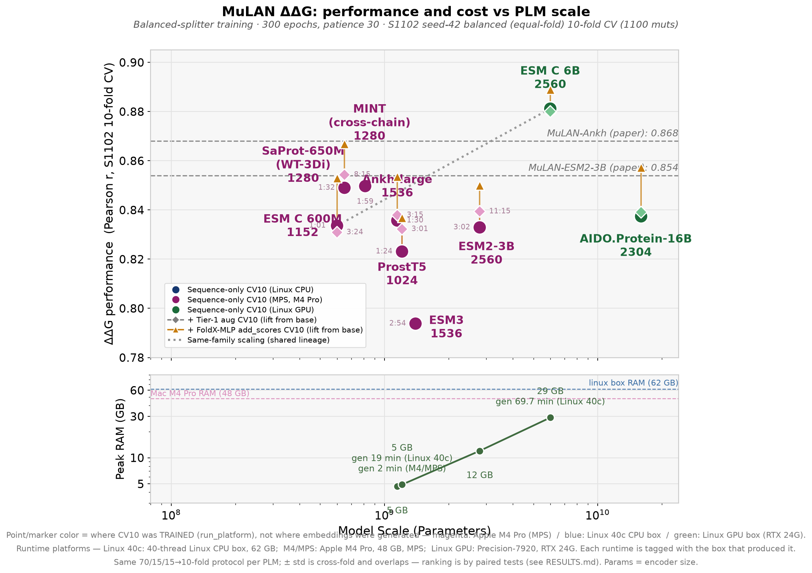
table and panel ② = 300-epoch converged run · the paired contrasts and the Ankh-family rows are the 50-epoch screen, panel ① · source:
docs/RESULTS.md §13, §14 · y = ΔΔG Pearson r (S1102 CV10) · x = encoder parameters · S1102 is upstream MuLAN's curated 1,102-mutation subset of SKEMPIComparison · the same models under homology hold-out
Per-structure Spearman across the leakage ladder
Two things happen at once as the hold-out tightens: the numbers fall, and the differences between backbones nearly disappear.
The FoldX channel, not scale, accounts for the result.
- Panel 1 — the converged ΔΔG run from the previous slide.
- Panels 2 → 3a → 4a — the same models on the same scale axis, in per-structure Spearman, as the hold-out tightens: by-complex → CD-HIT ≤60% → CATH superfamily. All on the combined single+multi rungs.
- Panels 3b, 4b — the frontier-comparable companions: fold-averaged Spearman (ProtBFF) and AUROC (CATH-ddG).
| Single-point hold-outs | ppS |
|---|---|
| Best base backbone, clustered (ESM-C 6B) | 0.193 |
| Weakest FoldX arm, clustered | 0.355 |
| Mean 12-term lift over base — by-complex | +0.223 |
| Mean 12-term lift over base — clustered | +0.311 |
| Spread across nine backbones, clustered: base → 12-term | 0.139 → 0.024 |
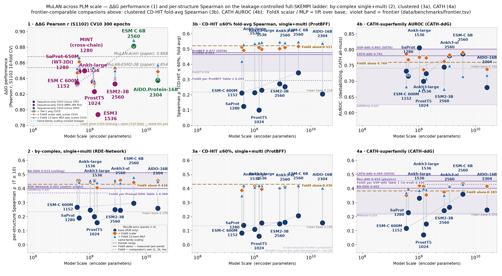
base (navy) → + FoldX scalar (orange) → + FoldX 12-term (blue) · violet band = published frontier · dashed = FoldX alone
Comparison · frontier placement
The CATH-superfamily leaderboard
Fourth of eleven — but read the two FoldX rows before the rank.
- Lift over the FoldX measured here (0.383) — +0.055 [+0.001, +0.118], paired over the same 13 complexes.
- Difference from the published FoldX row (0.430) — +0.008, unpaired, different row sets, no interval. Not separable.
- Interval on 0.438 — [0.327, 0.551], which contains CATH-ddG 0.494 and USP-ddG 0.493.
| # | method | CATH ppS |
|---|---|---|
| 1 | CATH-ddG | 0.494 |
| 2 | USP-ddG | 0.493 |
| 3 | flex-ddG (physics) | 0.454 |
| 4 | MuLAN + FoldX (ESM-C 6B, scalar) | 0.438 |
| 5 | FoldX (published) | 0.430 |
| 6 | BA-DDG | 0.402 |
| 7 | FoldX alone — measured here | 0.383 |
| 8 | Prompt-DDG | 0.303 |
| 9 | RDE-Network | 0.288 |
| 10 | DiffAffinity | 0.249 |
| 11 | PPIformer | 0.216 |
Published rows are USP-ddG Table 1, transcribed with per-row sources in
data/benchmarks/frontier.tsv. Their row set is 813 mutations over 53 complexes; ours is 687 over 50, of which 13 carry the ≥10 mutations the metric needs.- CATH as the rung the comparison is based on — the one tier where our FoldX and the frontier's are verified to agree — AUROC 0.760 here against 0.754 published, at 100% channel coverage on both sides.
- The limit of that agreement — on Spearman the two baselines diverge: 0.383 here against 0.430 published. The likely cause is the single
RepairPDBpass our FoldX energies were computed with — five repairs move our CATH-single FoldX from 0.398 to 0.459 (+0.060 [+0.020, +0.100]); the energies for both repair counts are included, so the claim is checkable. - Panel A, below — a different tier, and not a claim. It is the S1102 rows re-trained under a CD-HIT ≤60% split, scored in pooled Spearman, against ProtBFF rows computed over all mutations — a reference point, not a matched comparison. On the full-SKEMPI clustered rung the comparable pair is 0.547 against ProtBFF's 0.477 (fold-averaged Spearman), and that 0.070 gap depends on a 0.218 difference in the FoldX baseline the two methods start from; on lift the comparison reverses (+0.025 here vs +0.183). The clustered rung cannot be reported as an improvement.
- By-complex, the reliable reference tier — baselines within 0.061, and the improvement (+0.049) is mid-range — above RDE-Network (+0.032), level with Prompt-DDG (+0.057), below CATH-ddG (+0.091) and BA-DDG (+0.144).
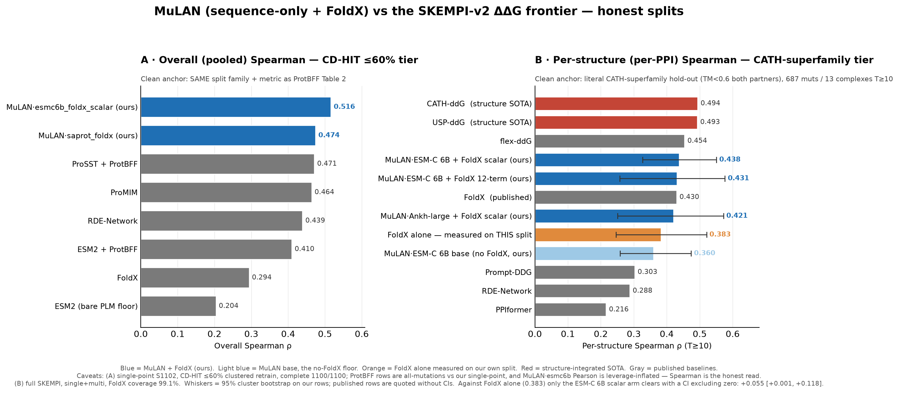
whiskers = 95% cluster bootstrap over complexes on our rows; published rows are quoted without intervals · source:
docs/RESULTS.md §26Comparison · every backbone, arm and tier
PLM × architecture × split benchmark
Base PLMs degrade sharply on unseen families; the FoldX channel restores most of the loss, and the recovery persists as the hold-out tightens. ESM-C 6B leads most rungs:
The margin over the next backbone is inside the spread the channel leaves behind — 0.024 across nine backbones on the clustered 12-term arm. Once the channel is added, the choice of backbone no longer matters.
| Rung | Best arm | ppS |
|---|---|---|
| Combined by-complex | 12-term | 0.479 |
| Clustered, single-point | 12-term | 0.446 |
| CATH superfamily | scalar | 0.438 |
interactive — click the MuLAN rows to expand every embedding × arm
The FoldX channel · Figure 1 — four routes
Four routes for structure into a sequence-only model
One architecture, four views — click the tabs 1a → 1d.
- 1a late concat — reduces performance. The wild-type 3Di block is constant across the wt/mut pair. (ProstT5)
- 1b hidden layer — reduces performance. The layer a probe prefers does not survive the trained head. (ProstT5)
- 1c input fusion — improves, +0.026 — but making the 3Di string (Foldseek’s structural alphabet) mutation-specific changes the string in 0 of 39 cases. (SaProt-650M)
- 1d score channel — improves across backbones, +0.009 / +0.017. A physics ΔΔG fed to the head through its
add_scoresinput slot: real but bounded. (Ankh-large)
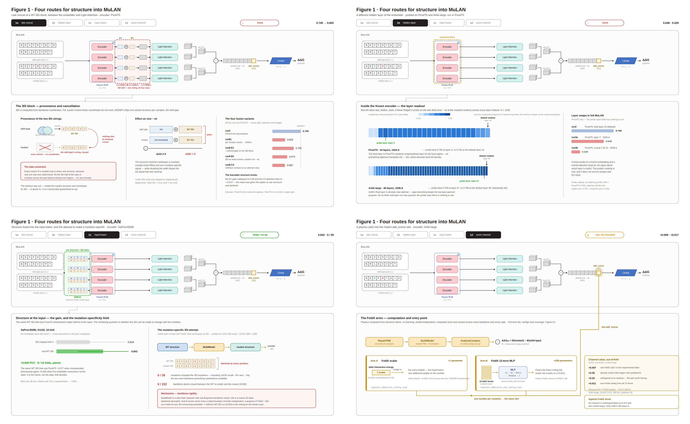
Figure 1 · every data-bearing node is declared and checked by
scripts_plots/check_fig1_numbers.py (static 2×2 shown in print/PDF)The FoldX channel · the FoldX-alone comparator
FoldX alone vs MuLAN base vs MuLAN + channel
An improvement over base is not evidence that the channel is worth adding. FoldX alone is unsupervised, requires no training, and is computed from the held-out structure, so homology control cannot lower the score. The frontier reports against this same baseline.
The single largest win: ESM-C 6B's 12-term arm at CATH-single, 0.398 → 0.495, +0.097 [+0.017, +0.194].
| Paired contrasts against FoldX alone | count |
|---|---|
| base arms that beat FoldX alone — anywhere | 0 of 78 |
| All arms, significantly beat | 19 of 232 |
| All arms, significantly lose | 61 |
| All arms, indistinguishable | 152 |
| Clustered tiers — wins, all of them 12-term | 3 of 76 |
And the 12-term advantage is not architectural. On the clustered single-point tier:
The trained arms sit around the untrained line. The sweep in question — the 12-term arm beating the scalar arm for all nine backbones on this tier — measures the decomposition carrying more information than the single total — a property of the FoldX output, not of the head consuming those terms or the encoder upstream.
| A linear reweighting of the twelve FoldX terms — no language model in the pipeline | 0.434 |
| FoldX’s single Interaction Energy term, same tier | 0.418 |
| The nine trained 12-term arms | 0.422–0.446 |
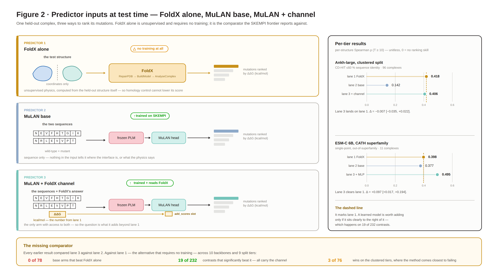
Figure 2 · paired cluster bootstrap over complexes, B = 10,000 · source:
docs/RESULTS.md §26Dataset & methodology · data-point construction
Dataset and mutant-structure generation
- Curated experimental ΔΔG from SKEMPI 2.0 — measured Kd, not synthetic (ΔΔG = RT·ln(Kd,mut) − RT·ln(Kd,wt), RT at 25 °C)
- The full extraction — 5,801 mutations across 337 complexes (4,165 single-point, 1,636 multi-point) — rather than the benchmarks this project originally planned to report on — S1102, upstream MuLAN’s own curated subset, and the standard SKEMPI benchmarks S1131 / S2003 / S4169
- Single-chain-per-partner restriction, because MuLAN takes one sequence per partner
- Single- and multi-point mutations, trained together on the combined rungs
How a data point is built
WT + mutant sequence → FoldX RepairPDB → BuildModel builds the mutant structure → AnalyseComplex gives the binding-ΔΔG terms (the FoldX arm) → PLM embedding → ΔΔG head
WT + mutant sequence → FoldX RepairPDB → BuildModel builds the mutant structure → AnalyseComplex gives the binding-ΔΔG terms (the FoldX arm) → PLM embedding → ΔΔG head
- "Mutations are generated" means the FoldX mutant-structure build. The ΔΔG labels are measured, never generated.
- The energies are computed once per complex and reused across every backbone and every split — which is most of what makes the pipeline expensive, and why they are distributed with the repository.
sources:
data/README.md · docs/FOLDX.md · the FoldX energies are also released separately as skempi-foldxDataset & methodology · leakage control
The leakage ladder — rung definitions
"Leakage-controlled full SKEMPI" = the full experimental SKEMPI 2.0, evaluated on progressively stricter homology hold-outs and scored per structure.
- by-complex — whole PDB entries held out.
- clustered — MMseqs2 / CD-HIT ≤60% sequence identity.
- CATH superfamily — both partners' superfamilies held out, TM < 0.6.
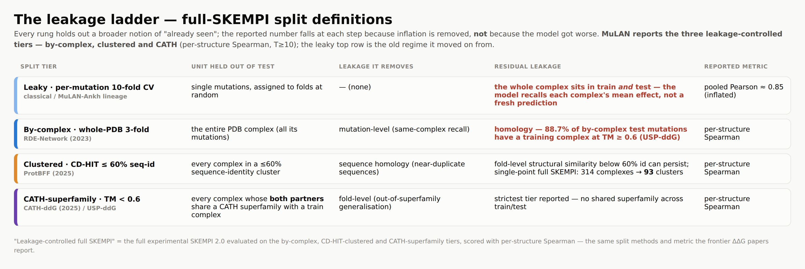
Fold structure and the name each rung carries on disk — same order as the figure above, with each combined variant beside its single-point parent
| Protocol | Held out | Folds | fold 0 train / val / test | Tier name on disk |
|---|---|---|---|---|
| by-complex | whole PDB entries | 3 | 2208 / 568 / 1389 | full_skempi_bycomplex |
| by-complex, combined | whole PDB entries, single + multi | 3 | 3275 / 592 / 1934 | full_skempi_bycomplex_all |
| clustered | MMseqs2 clusters at 60% identity | 3 | 2114 / 378 / 1673 | full_skempi |
| clustered, combined | 60% clusters, single + multi | 3 | 2969 / 537 / 2295 | full_skempi_clustered_all |
| CATH superfamily | every complex in a superfamily | 1 | 4213 / 878 / 687 | full_skempi_cath |
The combined rungs exist because the structure-based frontier — RDE-Network, DiffAffinity, Prompt-DDG, BA-DDG — trains one model on single and multi-point rows with a whole-PDB hold-out, so only the combined by-complex tier is protocol-matched to their published numbers.
residual-leakage figures from USP-ddG / ProtBFF ·
docs/SPLITS_AND_METRICS.md is the full treatmentDataset & methodology · the CATH tier
CATH(all-mut): contents, construction, and per-configuration counts
CATH(all-mut) — single- and multi-point mutations at the strictest rung.
- Construction — our rows joined onto the
cath_foldcolumn published with USP-ddG, so the split reproduces their literal CATH test set. - Size — 813 of their mutations, 687 of which survive this repository's SKEMPI extraction.
- Rule — no train/test pair shares a CATH superfamily on either partner.
- "all-mut" = the combined single+multi set at the CATH tier (vs CATH-single / CATH-multiple, which restrict to one mutation type).
- Only complexes with ≥10 mutations enter the per-structure Spearman, so CATH-all scores over 13 complexes / 687 mutations — small and noisy, and a real cost of the strictest split.
- The split artifact — built locally rather than redistributed: the recipe and a checksum manifest are distributed instead, and rebuild the split in about a second.
| Configuration | Mutations | Complexes (T≥10) |
|---|---|---|
| S1102 (upstream paper subset) | 1,100 | 24 |
| full SK · single, by-complex | 4,165 | 96 |
| full SK · single, clustered ≤60% | 4,165 | 96 |
| full SK · single+multi, by-complex | 5,801 | 121 |
| full SK · multi, by-complex | 1,636 | 43 |
| full SK · multi, clustered | 1,636 | 43 |
| CATH-all (single+multi) | 687 | 13 |
| CATH-single | 421 | 11 |
| CATH-multiple | 266 | 5 |
Mutations = the full set evaluated (each tested once across CV folds). Per fold: by-complex = 3-fold split by complex; clustered / CATH = cluster- or superfamily-hold-out, test = the held-out complexes, train = the rest. Reducing leakage shrinks the usable set: 5,801 → 687 at CATH, and 13 scored complexes is too few to rank backbones on. What the tier supports is the frontier comparison, not an ordering within it.
counts from
scripts_plots/results_matrix_ps.csv · split recipe in data/splits/splits_skempi_full_cath_kfold/README.mdDataset & methodology · metric coverage
Per-structure coverage — mutations vs complexes
Per-structure Spearman is a macro-average over complexes carrying ≥10 mutations.
- A few heavily-mutated protease and antibody complexes hold most of the data.
- So the T ≥ 10 filter keeps most of the mutations but only a minority of the complexes.
- Complexes are the unit the metric averages over, so the second number is the more informative one.
| Configuration | Mutations (scored / total) | Complexes T≥10 (scored / total) |
|---|---|---|
| Full SKEMPI · single + multi | 5,106 / 5,801 (88%) | 121 / 337 (36%) |
| Full SKEMPI · single-point | 3,536 / 4,165 (85%) | 96 / 315 (30%) |
| Full SKEMPI · multi-point | 1,323 / 1,636 (81%) | 43 / 146 (29%) |
| S1102 (upstream subset) | 923 / 1,100 (84%) | 24 / 110 (22%) |
Tile = complex, area ∝ mutations; teal = scored (T≥10), grey = dropped. Toggle the split — each tab restates its own scored/total. Same tile encoding as the ≤60%-identity and CATH family treemaps in the data-leakage explainer (appendix): those partition the complexes by homology cluster, this one shows which of them meet the T≥10 threshold the metric needs.
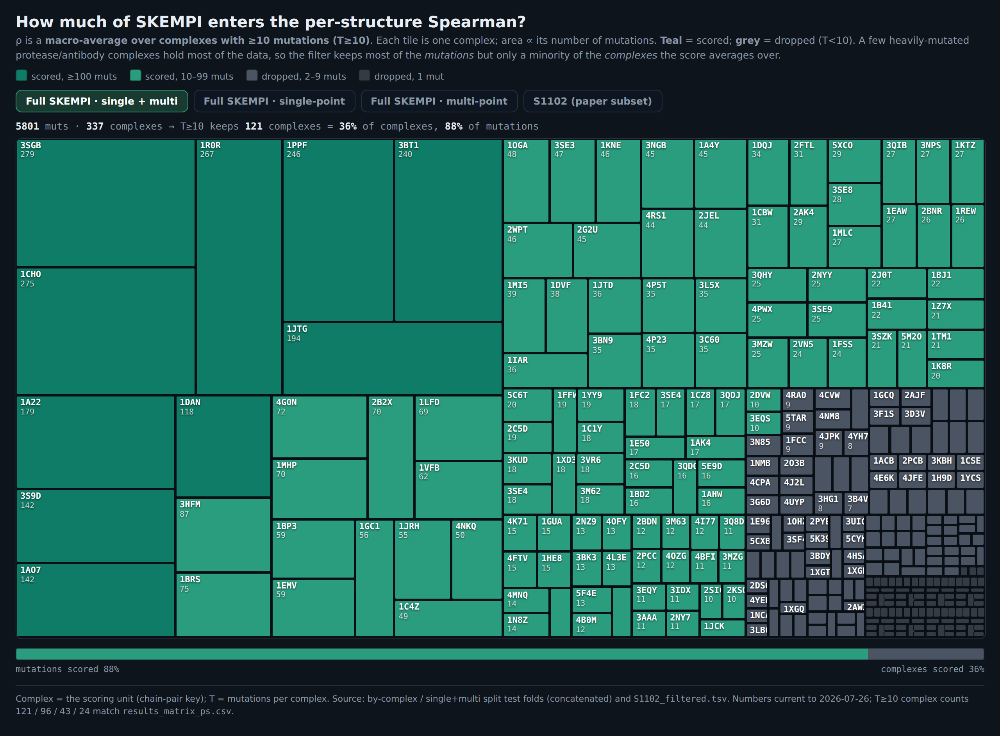
matches the T≥10 complex counts in
results_matrix_ps.csv (121 / 96 / 43 / 24)Dataset & methodology · protocol timeline
Metric and leakage-control timeline (2023–2025)
Two independent tightenings, applied across 2023–2025.
- Split — remove homology leakage from what is held out.
- Metric — per-structure Spearman in place of pooled Pearson.
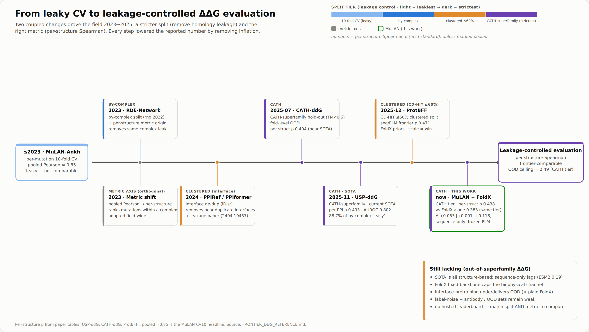
every drawn value is cross-checked against its source file and row by
scripts_plots/plot_fishbone.py, which refuses to write the figure when the two disagreeDataset & methodology · the metric
Pooled Pearson vs per-structure Spearman
The two metrics answer different questions.
- Per-structure Spearman — rank the mutations within a complex. That is the design question.
- Pooled Pearson — inflated by the spread between complexes, which is exactly where homology leakage hides and exactly the ability a leakage-controlled split is meant to stop rewarding.
Interaction sites · setup and reproduction
Attention-based interface prediction: setup and reproduction
- Task: MuLAN’s per-residue attention, used directly as an interface-residue classifier (AUROC) against residue-level labels across the whole PDB
- Labels: Zenodo 18175031 (Cα within 8 Å), 224,888 chains
- Reproduction — the upstream paper’s PDB-wide interface AUROC reproduces exactly, which is what makes the backbone comparison on the next slide trustworthy
| class | paper | ours |
|---|---|---|
| all interactions | 0.642 | 0.642 |
| protein–protein | 0.612 | 0.607 |
| DNA / RNA | 0.763 | 0.782 |
| ligand | 0.660 | 0.671 |
pipeline validated first, comparison second ·
experiments/attention_interface/Interaction sites · across backbones
Interface prediction across PLM backbones
Across 11 backbones on S1102 and on the leakage-controlled full-SKEMPI set, no PLM significantly beats Ankh-large — and ESM-C 6B and AIDO-16B are near the bottom. Scaling does not improve interface localization — the larger backbones score lower.


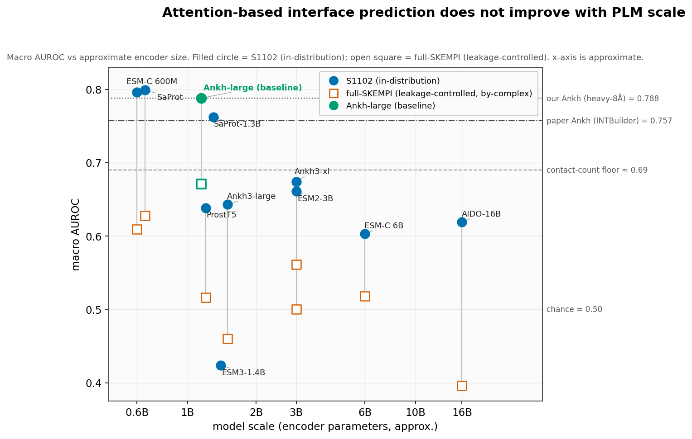
Interaction sites · interpretation
Attention-interface localization vs ΔΔG accuracy
ESM-C 6B is the best ΔΔG backbone and near-worst at localizing interfaces — about 0.19 below its own 600M sibling. The two are different read-outs of the same head, and they disagree.
- Mechanism: large PLMs spread their attention across the whole sequence. A rich pooled vector is enough to predict ΔΔG well, so the head no longer needs to concentrate attention at the interface — nothing in the training loss requires it to.
- Contrast with ESM3 — below chance, from massive-activation outliers. ESM-C 6B’s embeddings show no such outliers, and the drop comes from that spreading rather than from a defect.
- Consequence for reuse: "attention recovers interfaces" applies to Ankh-large and does not transfer to the larger backbones tested here, so the result should be cited together with the backbone it was measured on.
Summary
Summary of findings
- Scale and generalization. Bigger backbones do not generalize better. Under per-mutation CV every backbone looks strong and bigger looks better; under homology hold-outs the base arms degrade sharply (best clustered base 0.193, median 0.120) and the ordering by size disappears. Per-step training cost tracks embedding width, not parameter count, so the largest models are not even reliably the slowest.
- The physics channel. Low-cost, encoder-independent, computed once — and this channel accounts for the result. Mean lift over base is +0.223 by-complex and +0.311 clustered; the spread across nine backbones falls from 0.139 to 0.024. On CATH this puts a frozen sequence model at 0.438 — fourth of eleven, inside the range covered by the published frontier.
- The share obtained without training. Most of that 0.438 is reached by FoldX alone. No base arm beats FoldX alone anywhere (0 of 78). Of 232 contrasts against FoldX alone, 19 win and 61 lose. The CATH margin over the published FoldX row is +0.008 and not separable. The honest reading is "a frozen sequence model reaches a strong physics baseline", not "beats it".
- Interface localization. Ankh-specific. The upstream attention→interface result reproduces exactly; it does not transfer to any other backbone tested, and the larger backbones score lower.
What would change these conclusions
- FoldX energies rebuilt with several
RepairPDBpasses — a five-repair pilot on the CATH-single subset moves FoldX alone 0.398 → 0.459. - The skempi-foldx 0.2.x energies — 1850 of 6003 values differ from the v0.1.0 energies every number here was produced against, so adopting them is a re-run rather than a file swap.
- A CATH tier with more than 13 scored complexes.
The repository · contents and verification
Installation, contents and reproduction
Install
git clone https://github.com/cchin29/mulan-plm-foldxcd mulan-plm-foldx && pip install .PyTorch first; a dedicated venv is strongly recommended. ESM-C / ESM3 embedding generation needs its own environment (
requirements-esmc.txt) — the SDK pins transformers below what training uses.- Five CLIs:
mulan-predict·mulan-att·mulan-landscape·mulan-train·plm-embed. Worked examples indocs/USAGE.md. - Pretrained MuLAN checkpoints — not redistributed here; they are the upstream authors'. Training, the FoldX channel and every evaluation protocol run without them.
- The FoldX binary — licensed software from the CRG, not included here. The energies computed for this work are included, and are also released separately as skempi-foldx.
Contents of the release
- Split definitions (
data/splits/) keyed the way SKEMPI is, so any method that scores SKEMPI rows can be evaluated on exactly these hold-outs. - The computed FoldX energies (
data/foldx/) — the expensive half of the pipeline, computed once. - 666 folds of per-fold predictions across nine tiers (
results/) — enough to recompute every reported metric without a GPU. - The CATH split — built locally rather than redistributed: recipe +
MANIFEST.sha256, about a second to rebuild. - Integrity checks:
scripts/audit_local_results.pyover a tree of folds, andgen_benchmark_matrix_data.py --verifyover the comparator table. - Tests: 164, three suites — and they cover what this fork added, not the model.
modules.py,config.py,interface_xattn.pyand the five CLIs have no tests at all.
Where the numbers live
docs/RESULTS.md— the source of truth: §22 lineage and coverage · §23 single-point · §24 combined and multi-point · §25 CATH · §26 the FoldX comparator and the leaderboard.docs/REPRODUCE.md— what is rebuilt locally, and what cannot be recomputed from the released files.OPEN_QUESTIONS.md— the limitations record, in the repository.
licence: CC BY-NC-SA 4.0, inherited from upstream MuLAN — free for attributed non-commercial use, derivatives share alike, not OSI-approved
Limitations · scope of the evidence
Limitations and open questions
- Multiplicity on the CATH tier. The result is one arm of eighteen, uncorrected. Of the eighteen arms on that tier, one exceeds FoldX alone with an interval excluding zero — and at a 95% interval, eighteen arms give 0.9 expected false positives under a global null. Nothing was pre-registered. Read the CATH result as consistent with a real effect, not as evidence of one.
- 13 scored complexes, and row sets that do not match. Every published row is USP-ddG's 813 mutations over 53 complexes; ours is 687 over 50. There is no pairing between them, so the leaderboard is a ranking of point estimates whose intervals overlap the top of the table.
- The clustered rung. Cannot be reported as an improvement — the two methods start from FoldX baselines 0.218 apart, and on lift the comparison reverses.
- Augmentation. Unresolved, and the earlier harm signal was mostly a defect. Augmented splits briefly carried a constant offset on the FoldX channel; after the 2026-08-05 repair, five of the six re-run FoldX arms are indistinguishable from zero (survivor: Ankh-large scalar, −0.024 [−0.047, −0.002]). The one gain — Ankh-large base +0.056 [+0.010, +0.104] on the combined clustered rung — fails to replicate on another tier (CATH −0.069) or another backbone (ESM-C 6B −0.032, AIDO-16B −0.046, both intervals excluding +0.056). No established effect; the augmented runs are not included in the release.
- Repair count. Our energies were computed with FoldX's default single
RepairPDBpass, the likely reason our FoldX-alone value is below the published FoldX row. The energies for both repair counts are included in the release, so the claim is checkable rather than asserted. - Test coverage. A passing test suite does not cover the model. The untested modules are upstream's and unmodified — the tests guard this fork's additions, which is where a silent change would corrupt a published number.
full record:
OPEN_QUESTIONS.md · docs/RESULTS.md §24, §25, §26Appendix · the FoldX channel
The FoldX channel — definition and provenance
Everything behind the score channel — route 1d of Figure 1, the one of the four routes that improves across backbones, and the arm every result here uses.
- Quantity — ΔΔGint = the complex’s interaction energy for the mutant minus the same quantity for the wild type, from FoldX RepairPDB → BuildModel → AnalyseComplex (~8 s per mutation, cached once per complex).
- Terms — the twelve AnalyseComplex energy terms.
- Arms — the scalar arm, +1 parameter · the 12-term arm, +226 parameters through a small head.
- Coverage — 99.2% single-point (12393/12495) · 98.7% multi-point · 99.1% combined (5746/5801).
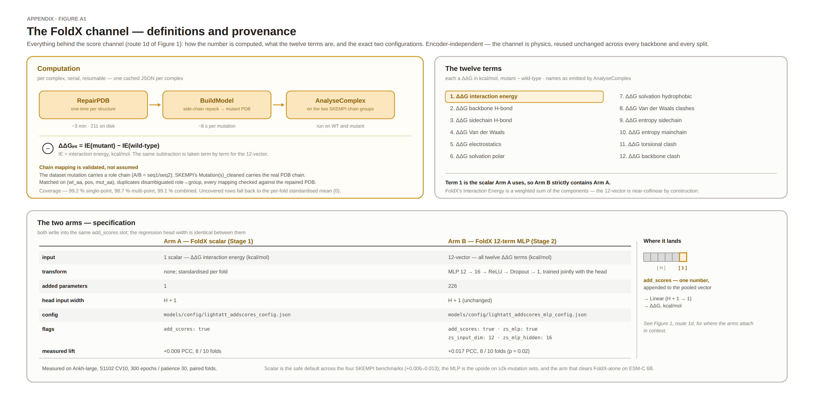
Figure A1 ·
docs/FOLDX.md contains the pipeline, the column contract and the caveatsAppendix
Data-leakage explainer
Appendix
Generalization across split tiers
The same arms on the three combined single+multi rungs, with the frontier comparators drawn on each. The CATH panel shows both physics baselines, one above and one below this work's best value — flex-ddG 0.454 and published FoldX 0.430 — beside the 0.383 measured here.
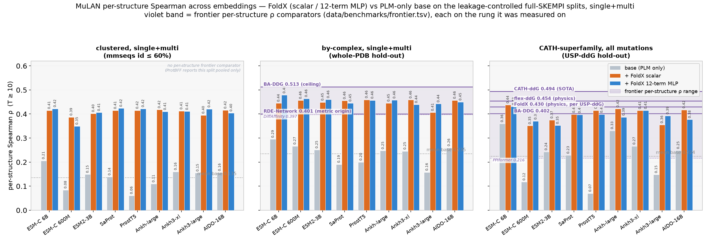
one protocol mismatch remains and is annotated rather than hidden: ProtBFF reports the clustered split pooled only, so the clustered panel has no per-structure comparator
Appendix · references
References and DOIs
Every published comparator quoted in these slides, with a resolvable identifier. All DOIs below were resolved on 2026-09-14 except where the row says otherwise. Values are transcribed in
data/benchmarks/frontier.tsv with a per-row source; experiments/BENCHMARK_MATRIX.md §References is the repository’s own list.| Work | Citation | Identifier |
|---|---|---|
| SKEMPI 2.0 | Jankauskaitė et al., Bioinformatics 35(3):462–469, 2019 | doi:10.1093/bioinformatics/bty635 |
| MuLAN (upstream) | Lombardi & Carbone, bioRxiv, 2024-08-26 | doi:10.1101/2024.08.24.609515 |
| USP-ddG | Yu, Bi, Zhao & Wang, Bioinformatics 42(Suppl_1), 2026 | doi:10.1093/bioinformatics/btag249 |
| CATH-ddG | Yu, Bi, Ma, Li & Wang, Bioinformatics 41(Suppl_1):i362–i372, 2025 | doi:10.1093/bioinformatics/btaf228 |
| flex ddG | Barlow et al., J. Phys. Chem. B 122(21):5389–5399, 2018 | doi:10.1021/acs.jpcb.7b11367 |
| BA-DDG | Boltzmann Alignment, ICLR 2025 | arXiv:2410.09543 |
| Prompt-DDG | Wu et al., ICML 2024 | arXiv:2405.10348 |
| RDE-Network | Luo et al., ICLR 2023 | doi:10.1101/2023.02.28.530137 · OpenReview _X9Yl1K2mD |
| DiffAffinity | Liu et al., NeurIPS 2023 | arXiv:2310.19849 |
| PPIformer | Bushuiev et al., ICLR 2024 | arXiv:2310.18515 |
| ProtBFF | Feldman, Maechler, Wang & Shakhnovich, bioRxiv | doi:10.64898/2025.12.23.696257 |
| CATH (classification) | Sillitoe et al., Nucleic Acids Res. 49(D1):D266–D273, 2021 | doi:10.1093/nar/gkaa1079 |
| FoldX Suite | CRG — academic and commercial licences; binary not redistributed here | foldxsuite.crg.eu |
| Attention labels | Per-residue PDB interface labels + released MuLAN attention | Zenodo 18175031 — not resolved 2026-09-14 |
Citation correction. Two identifiers in the repository’s own reference list pointed to unrelated papers and were corrected in the published repository on 2026-09-14: RDE-Network was cited as
arXiv:2210.06525, DiffAffinity as arXiv:2310.03962. The identifiers in the table above are the corrected ones. The values transcribed from those papers are unaffected — only the pointers were wrong.This work
- MuLAN + FoldX (these slides) —
github.com/cchin29/mulan-plm-foldx - skempi-foldx — the FoldX producer half and the SKEMPI 2.0 energies:
github.com/cchin29/skempi-foldx - foldenv — the per-residue structural-context module:
github.com/cchin29/foldenv - Upstream MuLAN —
gitlab.lcqb.upmc.fr/lombardi/mulan, mirrorgithub.com/GianLMB/mulan
In-repository locators used in these slides
docs/RESULTS.md§22 lineage · §23 single-point · §24 combined · §25 CATH · §26 comparator and leaderboarddata/benchmarks/frontier.tsv— every published value, one row per (method, metric, protocol)scripts_plots/results_matrix_ps.csv— the per-structure engine outputOPEN_QUESTIONS.md·docs/REPRODUCE.md·docs/SPLITS_AND_METRICS.md
Acknowledgements — this work was carried out during a 2026 summer research internship at the Laboratoire de Biologie Computationnelle, Quantitative et Synthétique (CQSB, UMR 7238, CNRS–Sorbonne Université), Paris, and was supported by a fellowship from the France-Stanford Center for Interdisciplinary Studies, Stanford Global Studies Division. The upstream MuLAN authors have not reviewed or endorsed this fork; any errors introduced here are mine.
licence of these slides follows the repository: CC BY-NC-SA 4.0